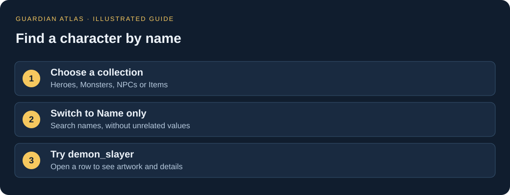
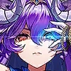
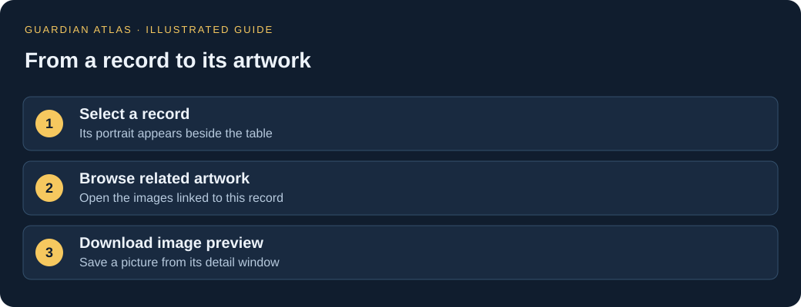
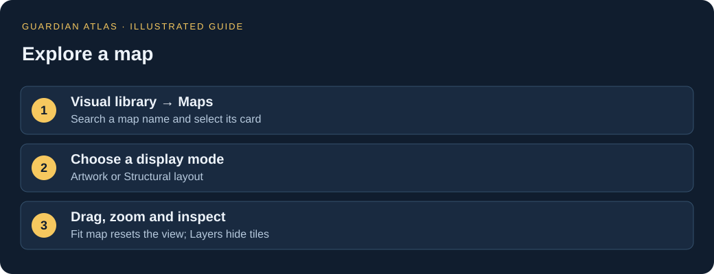
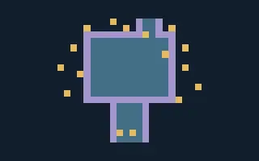
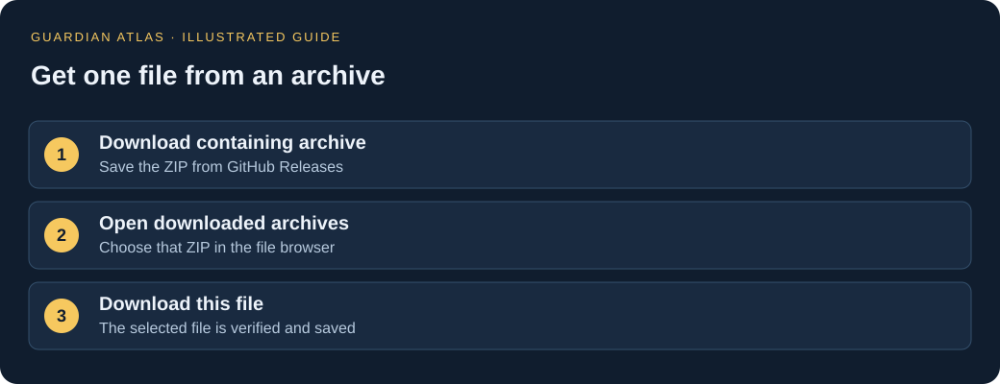

YOUR FIRST VISIT
Less digging.
More discovering.
Guardian Atlas lets you browse the game’s stored information, pictures and maps. You don’t need to write code or install the game. Start with what you want to find.
MEET THE CHARACTERS
From file name to full profile.
Open Characters and search an internal name, such as demon_slayer, or an available in-game name, such as Andras. Select a portrait to open its own profile page with linked variants, weapons, battle actions and any matched biography. Expand “How this name was identified” for the evidence, and “Technical details” for raw ranks and evolution links.
The directory groups 222 character families, including non-playable and test entries. 45 names are currently linked: Andras and Seira are confirmed, 17 are English-spelling matches, and 26 are biography-based inferences. Inferences have supporting text but are not independently confirmed. Unmapped entries keep their file names. Biography matches are explained on each profile.
- Choose Compare beside an evolution variant, or in a hero, monster, NPC or item record.
- Add up to four entries, then open Compare in the bottom bar.
- Keep Only differences checked to focus on changes. Gold cells differ from the first entry; numeric differences are measured against that first column.
These are stored values, not calculated combat stats. Comparing entries from different collections may show fields that exist in only one of them.
Meet Andras →PICK UP WHERE YOU LEFT OFF
Save a discovery. Share a link.
The bottom bar stays with you throughout the site. Choose ☆ Save view to bookmark the current page, or Save record / Save character for an individual entry. Open Saved to return to a bookmark or remove it.
Copy link shares the page address, including supported search filters, selected records, comparison entries or XP inputs. Map links remember the mode, visible layers and selected object; they reset the camera to fit the map when opened.
Saves stay in this browser on this website. They do not sync to another device, and clearing browser data removes them. Links copied on the hosted website work for visitors; a localhost link only works on the computer running the local site.
01 · FIND A NAME
Start with Name only.
Open Data tables, then expand Browse data collections in the left sidebar and choose a collection. Use Find a table… if you don’t see the one you need.
- Choose Name only beside the search box.
- Type part of an internal name or a known in-game alias.
- Select a row. Its picture, stored stats and other details appear in the record panel.
All fields also searches hidden and nested values. That is useful for research, but it can return a character whose name doesn’t contain your search. Name-only search still matches parts of names: oni can match onigirl and moniko.


Andras = demon_slayer
File names and in-game names can differ. The directory labels confirmed names and English-spelling matches separately; the name list is not complete.
02 · PUT A FACE TO THE FILES
Follow the pictures.
The visual library has tabs for heroes, monsters & bosses, NPCs, items and maps. All graphics also includes backgrounds, interface images and animation sheets.
- Select the category you want and enter a name.
- Select a hero card to open its character profile, another character card to open its data entry, or a graphic card to open the image details.
- From a record, choose Browse related artwork to see its linked pictures.
A new name search that finds nothing in the current section tries the other sections and tells you when it switches.
Why does a picture look broken up? A texture atlas stores separate animation pieces on one sheet. It isn’t a complete portrait. Look for Icon / sprite when you want a recognizable picture.
Try it: inspect the lava slime boss →
03 · EXPLORE A PLACE
Open a map. Make it your view.
- Go to Maps and select a thumbnail.
- Choose Artwork · angled, Artwork · top-down or Structural layout.
- Drag to move, scroll or use +/− to zoom, and use Fit map to reset.
- Toggle Layers to hide floors, walls or objects. Select a tile or use the object list to inspect its name and position.
Use Find a placement to search stored names. Separate checkboxes show NPCs, enemies, events, camera markers and other markers. Select a result to zoom directly to its position. Searches and marker categories are included in shared links.
The artwork count tells you how many placements have resolved static graphics. Structural mode lets you explore positions when artwork is missing. Fit map focuses on the floor area; distant staging objects remain available in the object list.
This is a reconstruction, not a playable level. Animations, live events and some decorations are missing. Turn on Markers to show decoded placements. Their colors follow the source layer; names and positions do not prove what spawns or happens in the live game.
Try it: open the small ancient dungeon →

04 · EXPLORE PROGRESSION
Every section is in the left sidebar.
- Choose XP & progression in the left sidebar.
- Set Progression to Hero or Weapon, then choose the data variant.
- Enter the starting and target internal levels. The XP difference updates automatically.
- Use Download this table to keep the selected data.
Before interpreting the result: these are stored internal level indices, not verified in-game level labels. The calculation assumes no partial XP at the start. Platform variants and the current playable cap can differ.
Open the XP calculator →05 · TAKE SOMETHING WITH YOU
A picture, a record or a folder.
Quick downloads: use Download image or Download record JSON in a record, Download image preview in graphic details, Download table JSON above a table, or Download map JSON in a map viewer.
For original and recovered files, open Game files & downloads:
- Choose a section and folder, then select a file.
- Click Download containing archive. This saves a ZIP from GitHub Releases.
- Return to the file browser. Under Open downloaded archives, select the ZIP you saved. It stays on your device.
- Select your file again and choose Download this file. Its contents are checked before saving.
A whole folder? Click Download folder…. Download the listed archive parts, or open the required archives locally to save an exact small subfolder ZIP. The parts are independent ZIP files: extract the parts you need into the same folder. Folder downloads include subfolders and ignore the text search filter.
Website exports download directly. Large export folders are offered in ZIP parts. Original archives can contain neighboring folders and may be hundreds of megabytes.
Try it: browse recovered game tables →
- Decrypted / decoded
- Recovered readable data, scripts and map files.
- Unencrypted originals
- Original files that didn’t need decryption. Some still require special software to open.
- Encrypted originals
- The protected source files, preserved for comparison.
- Other original binaries
- Files whose format isn’t fully identified.
- Website exports & images
- Converted data and previews, ready for direct download.
FOLLOW THE EVIDENCE
See the code behind a rule.
Every section is available in the shared left sidebar. On a small screen, choose All sections to open it.
- Choose Damage calculation for the explained formula and supporting code links.
- Use Reports & evidence for all available reports, excerpts, extraction tools and inventories.
- In Compiled code & assembly, search a class such as
DamageCalculator, select it, then choose Read assembly on a method. - Use Lua source for recovered script code. All source viewers have search and download controls.
Most native methods have not been interpreted. Assembly is a low-level view of the APK, not original C# source. Unmapped methods and partial ranges are labeled. Client patches and server behavior can differ.
Open the damage analysis →A FEW USEFUL WORDS
No developer vocabulary required.
- Record
- One entry in a table, such as a hero variant or an item.
- Internal name
- The name used inside the game files. It can differ from the name you see while playing.
- JSON
- A text file that keeps names and values organized. You can download it without understanding its formatting.
- Sprite / portrait
- A small picture used for a character, item or interface element.
- Texture atlas
- A sheet containing multiple pictures or animation pieces.
- Tileset
- The collection of building blocks used to draw a map.
- Layer
- A group of map objects you can show or hide together.
WHEN SOMETHING LOOKS ODD
Common questions
I searched an in-game name and got nothing.
Try part of the internal name, clear the category and availability filters, or browse the portraits. Only some in-game aliases are mapped. A name like Andras works, but the full roster isn’t translated yet.
Why are there several versions of the same character?
Separate records can describe evolution ranks, costumes, regional variants or different game modes. A record count is not a count of unique heroes.
Can I treat these numbers as my final in-game stats?
No. These are stored configuration values from an offline snapshot. Equipment, buffs, runtime changes and server behavior can affect the final result. The data folder and inspected APK may also differ in region or version.
A map has little or no artwork.
Choose Structural layout. Some meshes or textures are unresolved; older unsupported map formats are labeled unavailable. The artwork count is a coverage indicator, not a loading bar.
“Download this file” is disabled.
First download its containing ZIP, then select that ZIP under Open downloaded archives. Website exports are the exception: they can be downloaded directly.
The page is taking a while to load.
The catalogs are large, especially on a first visit. Wait for the loading message to finish before searching. Large maps and ZIP downloads can also take time. If a page reports an error, check your connection and reload.
Where can I read the more technical findings?
Use Game rules & code in the left sidebar for recovered Lua scripts, code indexes, map references, events and extraction evidence. You can enjoy the pictures and maps without using these sections.